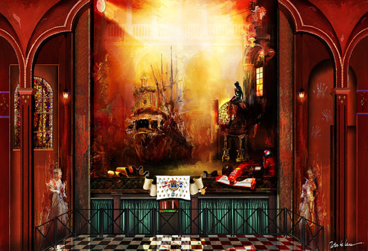
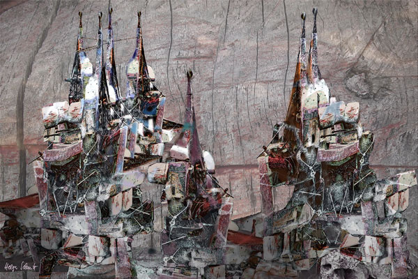
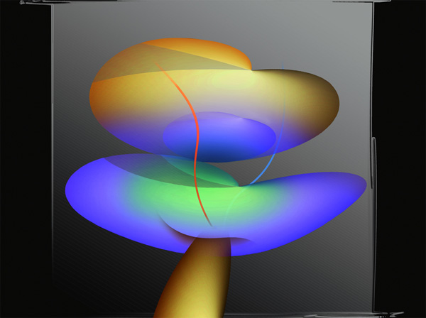
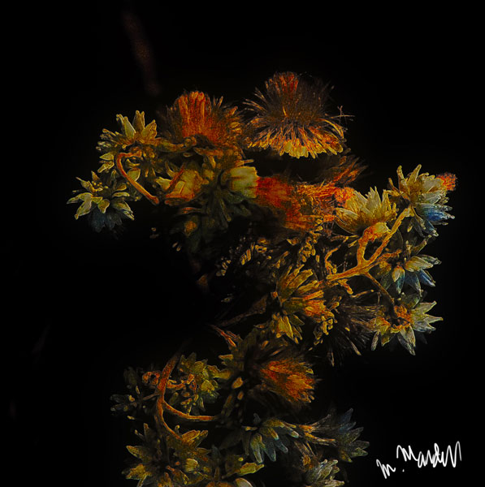
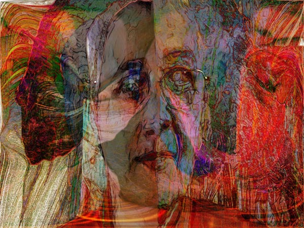
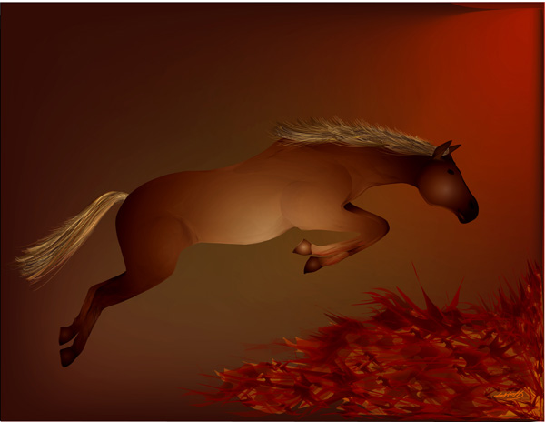
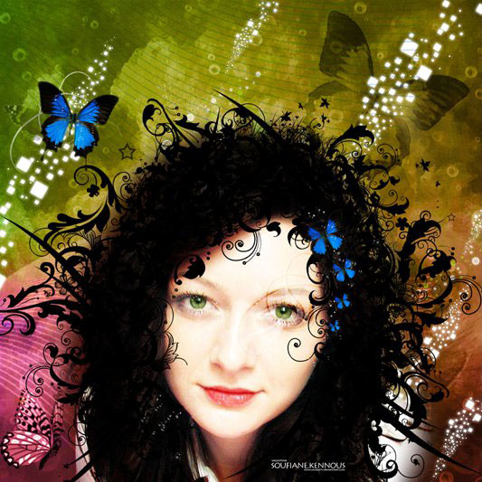

Click image to visit MOCA gallery where image resides
My Last Dream 
by Peter Mc Lane
10/21/2021
Cappadocian Chimneys 
by Helga Schmitt
10/22/2021
Fruits in Time
by Lyndsey Warren
10/23/2021

Two by One 
by Aurelia Zack
10/24/2021
Belem Dreams
by Dave Acton
10/25/2021
Even Sadness Has Beauty
by Lindsey Warren
10/26/2021
Dead Flowers 
by Michael Mardus
10/27/2021
From 13 to 31 
by Eva Gyorffy
10/28/2021
French Artist
by Margarita Fishbeyn
10/29/2021

Horse Jumping 
by Leslie Frank Hollander
10/30/2021
Valentina 
by Soufiane Kennous
10/31/2021